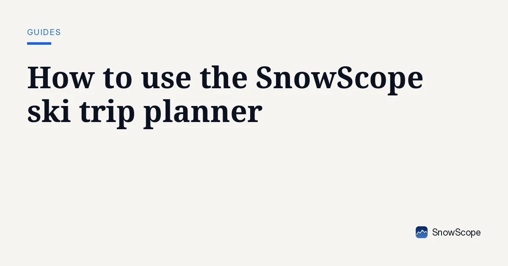
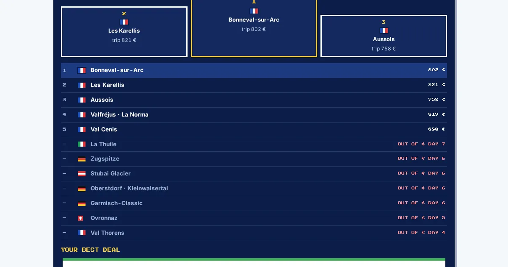

How to use the SnowScope ski trip planner
The SnowScope ski trip planner answers one question: where will my money and my dates buy the best skiing? You pick a region, your dates, a budget per person and what matters to you. Every resort in the region then gets a likely snow depth for your first day, a trip total per person and the chalets and hotels around it, ready to book. This guide walks through the normal mode, the table, the game mode and what each number means.
See the live snow forecast for Snow regions in the SnowScope appSnow depth, powder alerts and the 3D map, free.
Step 1: region, dates, budget, party, priorities
Open the planner with the "Plan ski trip" button at the top of any SnowScope page. The normal mode opens by default. The first block holds the controls: the region chips (the Alps, the Pyrenees, Scandinavia, US West, US East, Canada West and the Atlas, 7 regions in all), the first and last night of the trip, your budget per person in euros, and who is going (solo in your own room, a couple sharing, or a family of 4 sharing).
Below the dates sit the priority chips: money first, best pistes, lots of snow, cheap food, cheap hotel, cheap pass. Pick one or several. With none selected the resorts are ranked by snow per euro of day pass; with chips selected, each chip counts the same and the ranking follows your mix. Every change re-runs the plan at once, on the map, in the cards and in the table.

Step 2: read the map
The map is the same style as the SnowScope home map. Each resort is a pin coloured by the trip price per person, green for the cheapest and red for the dearest of the region. The label shows the likely snow depth on your first day and the trip total. The 3 best resorts for your priorities carry a star and stay on top where pins crowd. Tap a pin to jump to its card.
The legend under the map gives the price scale of the region for your dates, so you can see at a glance whether the gap between the cheapest and the dearest week is small or large.

Step 3: the ranked cards and the table
Under the map the resorts come as cards in ranking order. Each card shows the snow block (likely value, likely range, snow now and the normal depth for that date), three meters for the ski pass, the hotels around and the pistes, the advantages and drawbacks, a price table and the trip bar: pass, nights and food side by side against your budget, with the money left or the money missing. The chalets and hotels around the resort are listed with the distance to the lifts and a BOOK link for your dates; PRICES MAP opens a live price map on request.
Prefer numbers in rows? Switch to TABLE. Every column sorts with a tap: day pass, night, food per day, trip total, money left, snow now, snow at the start, pistes. Tap a row to open its full card under the table.

What the numbers mean
Snow now is today's depth on the upper slopes of the resort, the same value as the live map. Snow at the start is a projection: a likely value with a likely range. It combines today's snowpack, an ensemble of forecasts as far ahead as it goes, and how the snow changed up to your date in the past winters at the same place and height. The range is the middle 60 % of those outcomes. The further your dates, the wider the range; the planner takes dates up to 6 months ahead and refreshes every day.
The ski pass uses the advance multi-day rate where the resort publishes one, times your ski days (7 nights give 6 ski days, one day to travel), else day tickets. Hotel and food are estimates per person: a room or apartment shared by your party near the lifts, breakfast, a lunch on the slopes and a simple dinner. They are there to compare resorts, not to replace a quote. The trip total is pass plus nights plus food per person, compared with your budget; with Pro, travel is added too.
Game mode: the Ski Grand Prix
Tap "Play it as a game" and the same planner turns into one screen: the pixel map of the Alps with every resort as a pin, the same chips, dates and budget, and a START button. The resorts then race through your trip night by night; a resort that runs out of your budget drops out at the day it goes broke. The result screen gives the podium, the full order, your best deal as a card with BOOK, and a reminder to get powder alerts for the region. "Back to normal" returns to the map and the cards with the same settings.

Pro: the full trip cost with travel
When the first results appear, the planner asks whether you want the full trip cost. Type your town or address: with Pro, the cheapest way to each resort, by car (fuel and tolls), train or flight, is estimated and added to every total, so the ranking also reflects how far each resort is from home. Without Pro the Pro sheet opens; you can also add the starting point later from the control block.

Tips for skiers
- Set the real dates first: the snow projection and the pass rate both depend on them.
- Use the budget per person, not for the whole party; the planner scales the hotel for your party size.
- The chalet list is sorted by distance to the lifts; the stars sort shows the best-rated places instead.
- Powder alerts for the region keep you informed until you leave; they are free.
More maps (external sites)
References and credits
- SnowScope ski trip planner snowscope.app/planner.html
About these numbers
Snow numbers: SnowScope snow history, 46 past winters (1980-81 to 2025-26) at three heights of the resort (an estimate for an area, not resort reports). Lift, run and access facts: the sources listed below, checked on the date shown.
Cite this report
For research, teaching or the press: the numbers and charts are free to reuse under CC BY 4.0 with this citation.
SnowScope (2026), How to use the SnowScope ski trip planner, https://snowscope.app/blog/en/2026/11/how-to-use-the-snowscope-ski-trip-planner.html, accessed 2026-11-19
SnowScope (Atlas Labs). (2026, November 19). How to use the SnowScope ski trip planner. SnowScope snow reports. https://snowscope.app/blog/en/2026/11/how-to-use-the-snowscope-ski-trip-planner.html
BibTeX
@misc{snowscope2026howtousethesnowscopeskit,
author = {{SnowScope (Atlas Labs)}},
title = {How to use the SnowScope ski trip planner},
year = {2026},
month = nov,
howpublished = {\url{https://snowscope.app/blog/en/2026/11/how-to-use-the-snowscope-ski-trip-planner.html}},
note = {Published 2026-11-19 17:09 UTC; accessed 2026-11-19}
}· CC BY 4.0 · Methods, data and tools →
Follow Snow regions
Free: a message when fresh snow is coming, and the forecast every morning.
More snow reports

Orelle reached 31 cm by 16 November, up 17 cm in one week. The Alps are forecast to get up to 103 cm more snow by 19 November.

Orelle leads the global forecast with 110 cm in 72 hours. Europe dominates; North America trails. Data from 18 November.

Courmayeur leads forecast with 88 cm in 72 hours; snow depth is at 142 percent of normal for mid-November as of November 15 data.